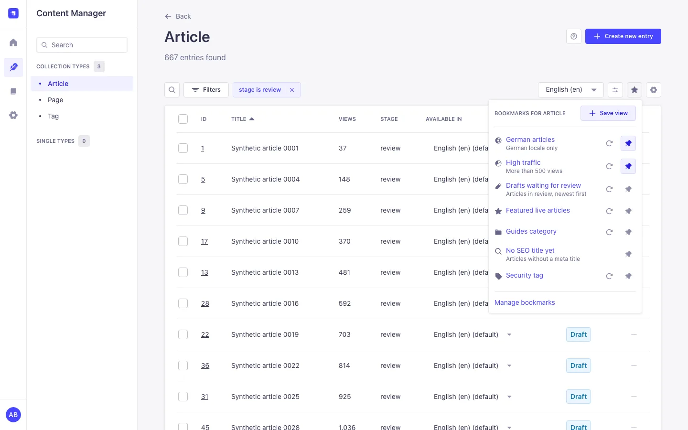
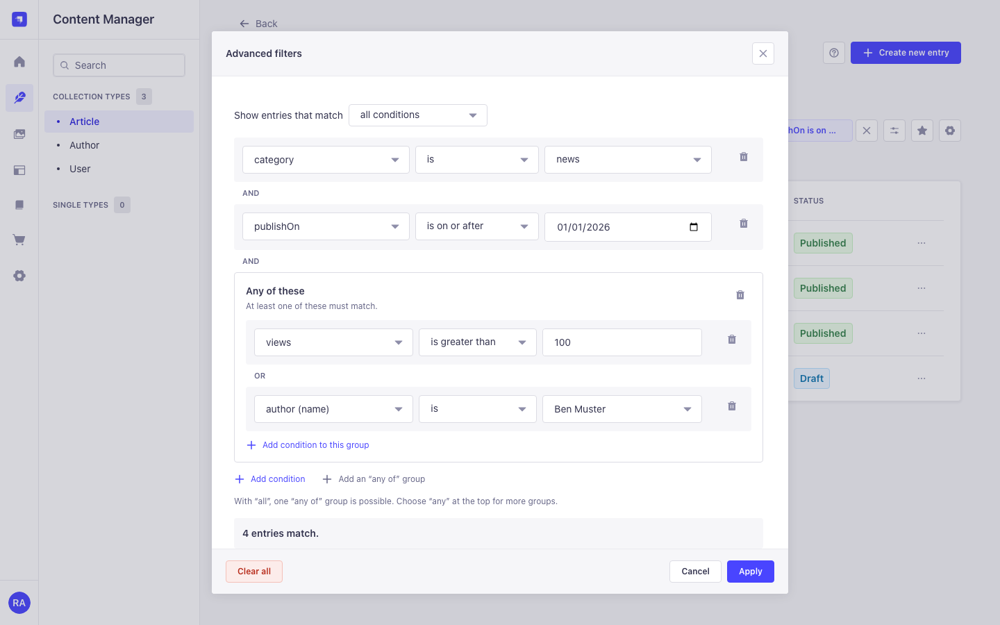
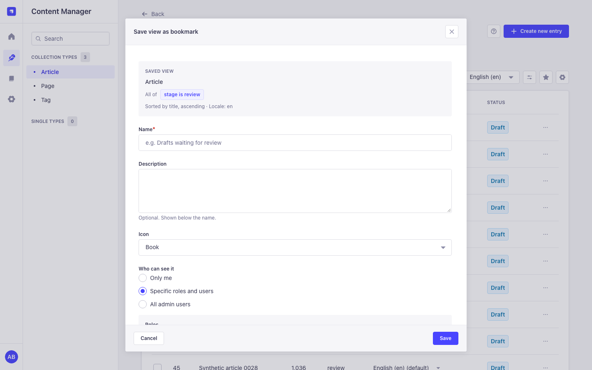
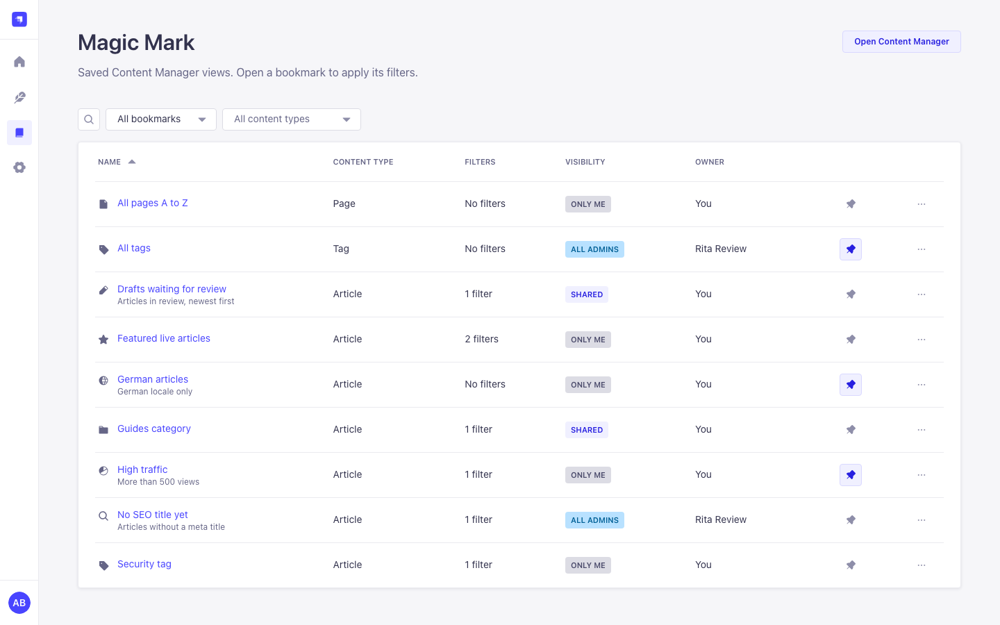
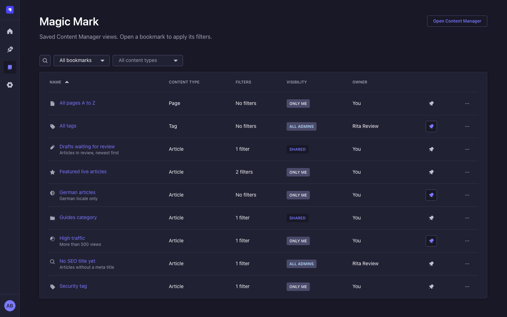
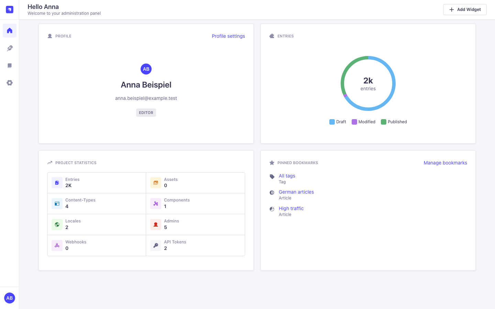
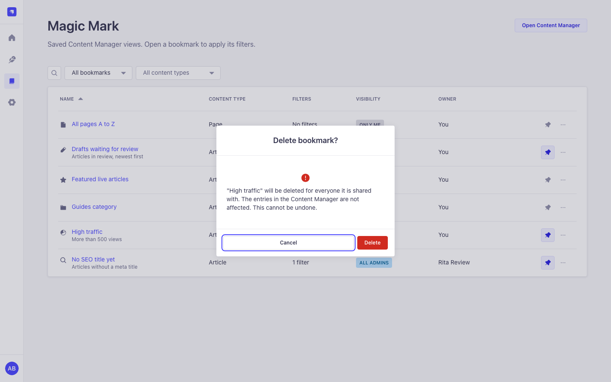
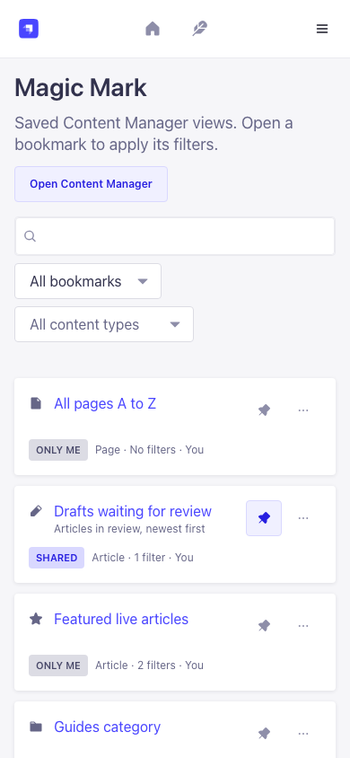

Bookmarks in the list view
A Bookmarks button next to View settings lists the bookmarks of the current content type, pinned first. Save view keeps filters, sort order, page size, search and locale.
Magic Mark is a free, MIT-licensed Strapi 5 plugin that saves Content Manager list views (filters, sort order, page size, search and locale) as bookmarks you open with one click and share with roles or admin users.
Pin favourites to the Strapi homepage and build filters the native filter bar cannot express. No license key, no limits and no external calls.
npm install strapi-plugin-magic-mark



^5.57.0^22.22.2 || >=24.15.0Editors open the same lists every day. Magic Mark keeps those lists as bookmarks inside Strapi, with permissions per role and a UI built only from Strapi Design System components, in light and dark mode, from 1440 px down to 320 px.
A Bookmarks button next to View settings lists the bookmarks of the current content type, pinned first. Save view keeps filters, sort order, page size, search and locale.
Build AND / OR filters as plain sentences, with one optional group such as "news and any of (popular, by Ben)". Inputs follow the field type, a live count shows the matching entries before you apply, and a chip shows the active filter.
Keep a bookmark private, share it with roles and single admin users, or with all admins. Only the owner or a manager changes it; recipients can pin and duplicate it.
Pins are per user. Pinned bookmarks appear first in the toolbar and in the "Pinned bookmarks" widget on the Strapi homepage. The Magic Mark page searches, filters and sorts everything you can see.
Six role permissions, owner checks and strict input validation on every request. A bookmark can only point to a Content Manager list.
Row locks keep edits, shares and pins correct when Railway replicas or pm2 workers share one database. Tested with 8 processes on Postgres.
Open any collection type in the Content Manager and set filters, sort order, search or locale, with the native filters or with Advanced filters.
Open Bookmarks next to View settings and choose Save view. Name it, pick an icon and decide who can see it.
One click in the toolbar, on the Magic Mark page or in the homepage widget opens the list exactly like that, on page 1.
Needs Strapi 5.57 or newer 5.x and Node.js 22.22.2 or newer (or 24.15.0 or newer). Installing into a new Strapi 5.61 app with npm 11, yarn 1.22 or pnpm prints no warning caused by the plugin.
npm install strapi-plugin-magic-mark
# or: yarn add strapi-plugin-magic-mark
# or: pnpm add strapi-plugin-magic-marknpm run build
npm run develop
Strapi enables installed plugins by itself. If your config/plugins file
lists plugins explicitly, add 'magic-mark': { enabled: true }. Super Admins
have every permission; give other roles what they need under Settings, Roles, Plugins,
Magic Mark.
All screenshots use synthetic data on a Strapi 5.61 host.







There are no configuration options and no environment variables. Role permissions decide what each admin can do. The owner of a bookmark can always edit and delete it (with Edit own and Delete own).
| Permission | Action id | Allows |
|---|---|---|
| Read bookmarks | plugin::magic-mark.bookmarks.read |
See and open bookmarks, pin them, the Magic Mark page and the widget. |
| Create bookmarks | plugin::magic-mark.bookmarks.create |
Save views and duplicate bookmarks. |
| Edit own bookmarks | plugin::magic-mark.bookmarks.update |
Rename, describe, change the icon and update the saved view. |
| Delete own bookmarks | plugin::magic-mark.bookmarks.delete |
Delete your bookmarks. |
| Share bookmarks | plugin::magic-mark.bookmarks.share |
Share with roles, admin users or all admins. |
| Manage shared bookmarks of others | plugin::magic-mark.bookmarks.manage |
See every public or shared bookmark under Show > All shared bookmarks, also ones of deleted users. Private bookmarks of others stay private. |
Filter Articles by stage is review, sort by
updatedAt descending, save the view as "Waiting for review" and share it
with the Editor role. Every editor finds it in the Bookmarks menu and can pin it.
In Advanced filters choose any condition, add "stage is one of idea, review" and "author is anna.beispiel", apply, save it as a private bookmark and pin it.
Keep all conditions, add "Category is news", then add an "any of" group with "Views is greater than 100" and "Author (name) is Ben Muster". The count shows the result before you apply.
curl -s "http://localhost:1337/magic-mark/bookmarks?scope=pinned" \
-H "Authorization: Bearer $ADMIN_JWT"
Admin routes under /magic-mark. Each one needs an authenticated admin and
every listed permission. A bookmark you cannot see answers 404; one you may not change
answers 403. There are no Content API routes.
| Route | Permissions | Purpose |
|---|---|---|
GET /bookmarks |
read |
Paginated list. Query: page, pageSize (max 100),
q, scope, sort, contentType.
|
POST /bookmarks |
read, create | Create a bookmark. Sharing also needs share. |
GET /bookmarks/:id |
read | One bookmark; sharing lists for the owner and managers. |
PUT /bookmarks/:id |
read, update | Edit name, description, icon and sharing. |
DELETE /bookmarks/:id |
read, delete | Delete a bookmark with its shares and pins. |
PUT /bookmarks/:id/view |
read, update | Save the current view into a bookmark. |
POST /bookmarks/:id/duplicate |
read, create | Private copy owned by the caller. |
PUT /bookmarks/:id/pin |
read | Pin or unpin for the caller only. |
GET /sharing/roles, GET /sharing/users |
share | Roles, and a paginated search of active admin users. |
Railway replicas, Kubernetes pods and pm2 cluster workers can share one database. The plugin keeps no state in the process and starts no timers.
SELECT ... FOR UPDATE)
inside a transaction, so parallel share edits, pins and deletes never leave duplicate
or orphaned rows.
Strapi's own schema sync is not safe in several processes at the same moment. When an upgrade adds tables (3.x to 4.x adds two), start one instance first, or let your platform restart the processes that stop with "already exists".
Lists are filtered, sorted and paginated in the database (at most 100 rows per request) and load owner names, pins and share flags with one query each.
No manual steps: update the package, rebuild the admin and start Strapi.
/license/*, /roles,
/users and /bookmarks/reorder are gone; the custom manual
order is no longer used. Strapi 5.57 or newer is required.
Yes. Every feature is available to everyone under the MIT license.
No. It makes no outbound requests and has no telemetry, not even an install ping.
No, also not as Super Admin. Managers see public and shared bookmarks of everyone under Show > All shared bookmarks, including ones whose owner was deleted.
No. The page number is not saved, so a bookmark opens on page 1 with its filters, sort, page size, search and locale.
Strapi shows only $and filters as tags. The list is still filtered
correctly, and a chip in the toolbar shows the whole filter as a sentence; select it
to change the filter.
No. Columns are a per-user Content Manager setting and stay as they are.
Releases are published to npm by semantic-release from the main branch. CI runs lint, format check, tests, type checks, build and verify on Node 22 and 24, and once more against Strapi 5.57.0, the lowest supported version.
| Magic Mark | Strapi | Node.js |
|---|---|---|
| 4.x | 5.57.0 or newer 5.x (tested on 5.63.0) | 22.22.2 or newer 22.x, 24.15.0 or newer |
| 3.x | 5.x (no longer maintained) | 22 |
npm ci --legacy-peer-deps
npm run lint
npm run format:check
npm test
npm run build
npm run verify